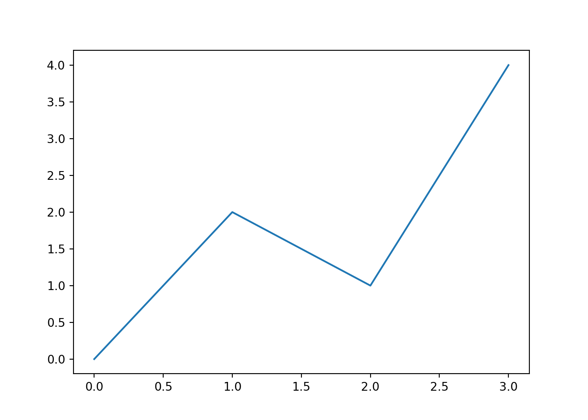

Python for Data Science
Perry Stephenson
2018-09-30
1 Introduction
This book has a target audience of one person: myself. I’m writing it as a reference for myself as I learn Python and start to transition from being 100% R to more of a 50/50 language mix. I’m making it public for two reasons:
- It’s easier for me to access my notes from anywhere without a password
- It might be useful for someone else who’s trying to figure out how to do something in Python
It’s eventually going to resemble an opinionated manual, where I thoroughly document the bits of the language that I think are worth using, and completely ignore the bits I don’t use. This may or may not be useful for other people!
It’s also going to make a lot of comparisons between R and Python, for my benefit.
1.1 What is Python?
Python is a language. IPython is an interactive shell (which is itself tautologous, as all shells are interactive, surely?). Python is the name of the language, and there are multiple implementations of Python, including CPython (the reference implementation), PyPy (a faster implemenetation), and more. This is different to R, which is both a language AND an implementation, meaning that the R language is defined by the behaviour of the R interpreter. R runs in both script mode and interactive mode, which is again a key difference. So Python is to R as IPython is to R as CPython is to R. Easy!
1.2 Setting up Python
This is a Python book written in R Markdown. This means that all of the Python examples are being excuted via the reticulate package. The Python distribution for all of these examples is Anaconda Python (version 3.6), and the packages are being managed within a conda environment. I decided to use Conda to manage my Python environment based on the discussion in this blog post and to make sure that I had full control over the environment.
To set up a new Macbook (MacOS Mojave) with Python, I:
- Visited https://www.anaconda.com/download/#macos in a web browser and downloaded the Python 3.6 installer, then installed it.
- Created a new conda environment for this project (
conda create --name py4ds python=3.6) - Installed numpy, pandas and matplotlib into the conda environment using
conda activate py4dsthenconda install numpy pandas matplotlib - Configured reticulate to use the new environment (and load a package to force it to load this non-default environment)
# R
library(reticulate)
use_condaenv(condaenv = 'py4ds', require = TRUE,
conda = '/Users/perrystephenson/anaconda3/bin/conda')
import('pandas')## Module(pandas)Now we can check that the correct version of Python is being used:
# Python
import sys
print(sys.version)## 3.6.6 |Anaconda, Inc.| (default, Jun 28 2018, 11:10:00)
## [GCC 4.2.1 Compatible Clang 4.0.1 (tags/RELEASE_401/final)]And to make sure everything is working properly, I’ll generate a plot with matplotlib.
# Python
import matplotlib.pyplot as plt
plt.plot([0, 2, 1, 4])
plt.show()
1.3 Getting Help
Getting help about a Python function is pretty easy, using the help(<thing>) syntax (for example help(len)). The documentation seems a bit sparse, so I suspect that Google is also a pretty good place to go when looking for help on a function or a feature.